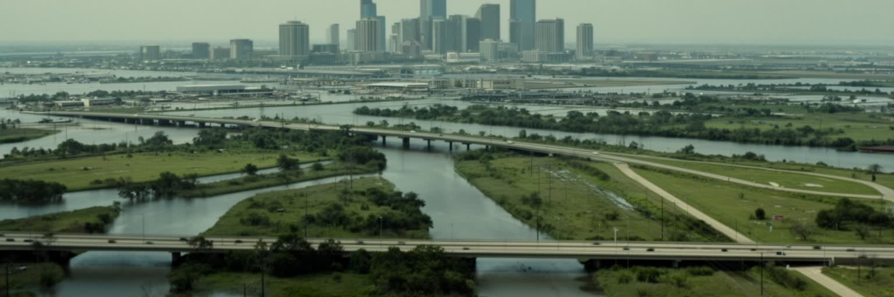
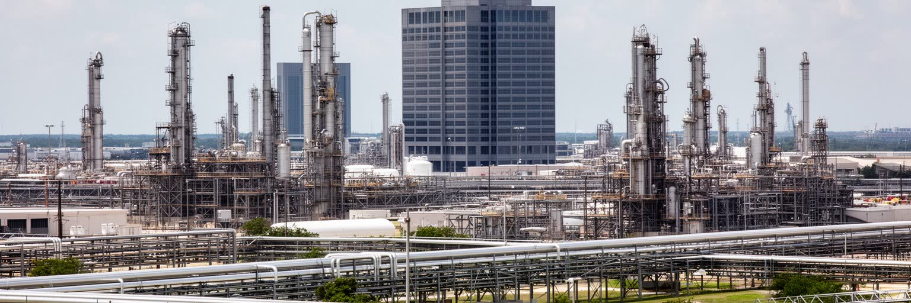
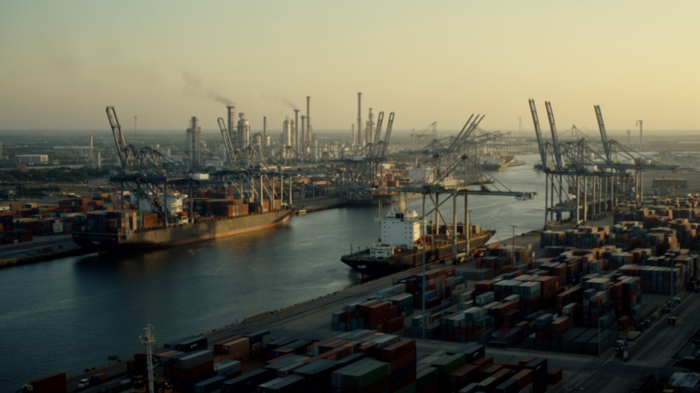
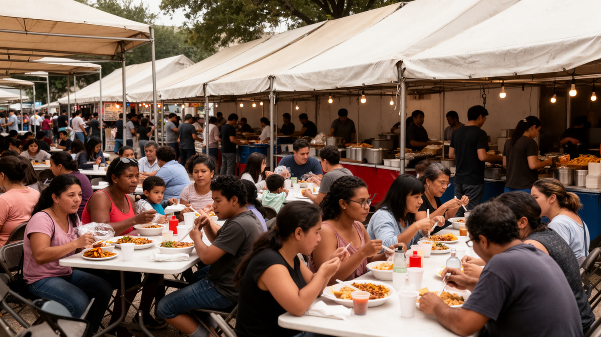
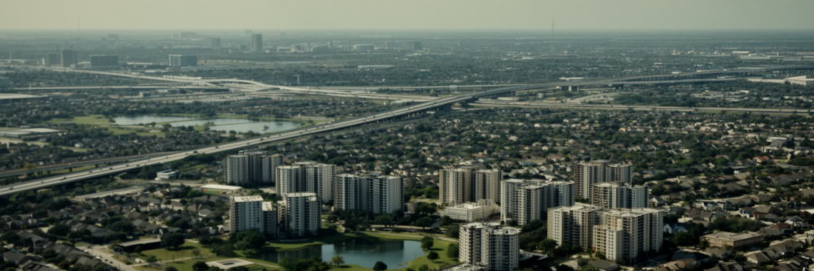
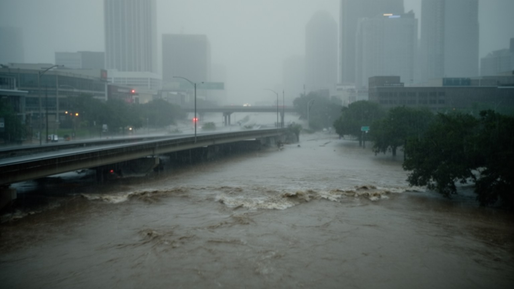
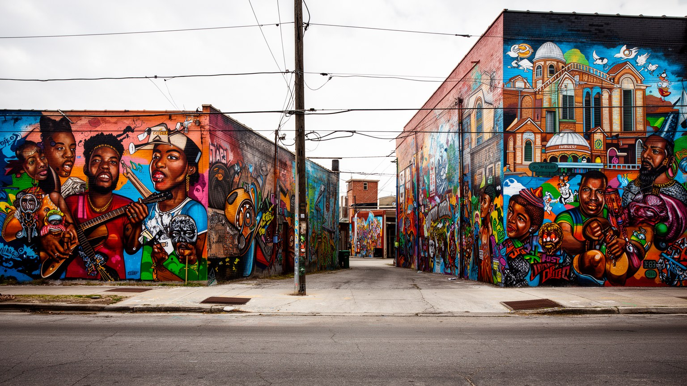
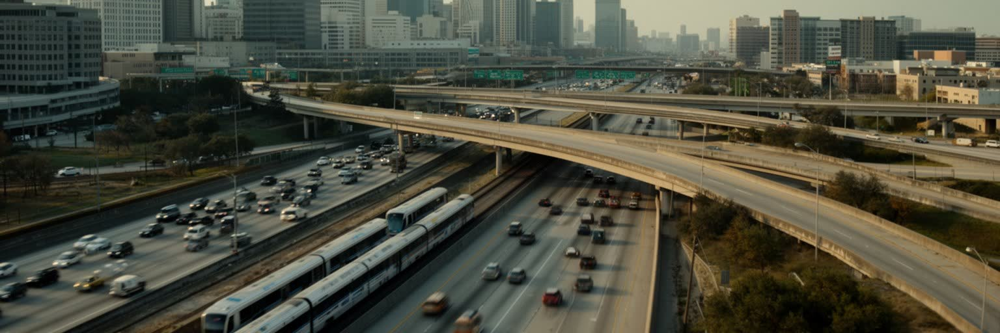
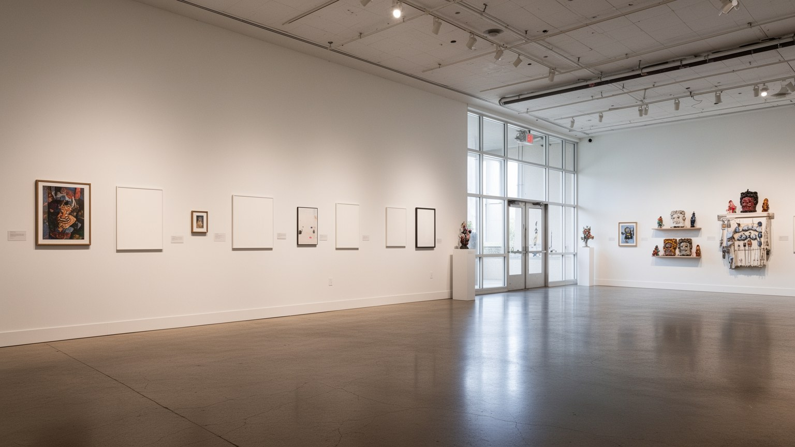
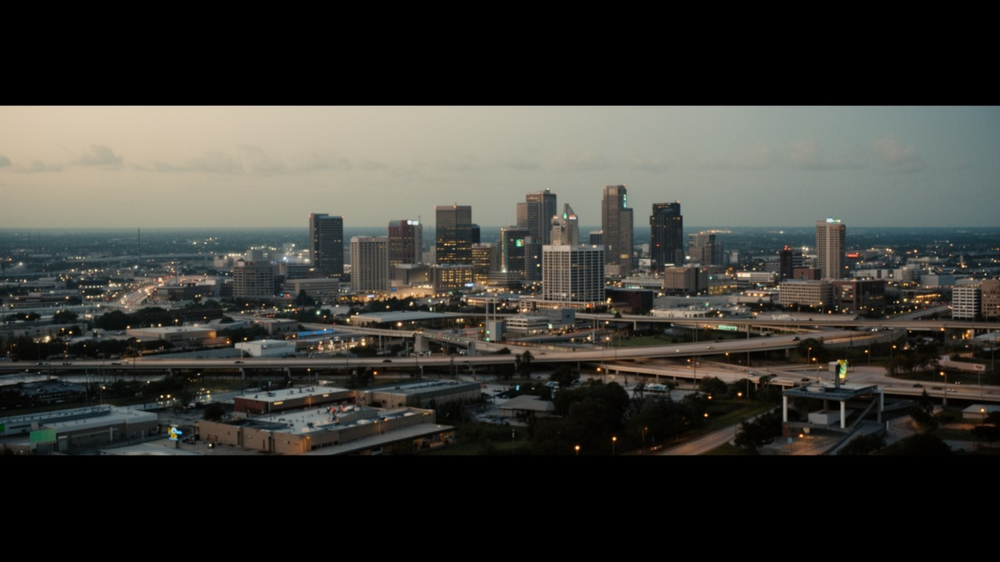

地政学
ヒューストンはメキシコ湾岸の内側に位置し、港湾、石油化学、宇宙開発、軍需、ラテンアメリカとの結節を抱えます。バイユーの低地と高速道路が、内陸、湾岸、世界市場をつなぐ要衝にしています。防災にも関わります。

🇺🇸 アメリカ合衆国 / テキサス州 / World City Atlas
メキシコ湾岸の低地に広がるエネルギーと港湾の大都市です。石油、宇宙、医療、移民の食、郊外住宅、洪水リスクが、車社会の広い都市圏に重なります。
都市の骨格
ヒューストンは、低い湿地の地形、石油化学の巨大な産業帯、宇宙開発と医療研究、移民の食文化、郊外に伸びる住宅地を同時に読む都市です。
ヒューストンはメキシコ湾岸の内側に位置し、港湾、石油化学、宇宙開発、軍需、ラテンアメリカとの結節を抱えます。バイユーの低地と高速道路が、内陸、湾岸、世界市場をつなぐ要衝にしています。防災にも関わります。
石油、天然ガス、化学、港湾物流、航空宇宙、医療研究、建設、外食が雇用を厚くします。高給専門職の周囲で、現場作業、移民労働、清掃、介護、配送、厨房が都市の日常を支えます。景気循環の影響も大きい課題です。
黒人南部文化、メキシコ系、ベトナム系、南アジア系、西アフリカ系の移民が食と信仰を広げます。教会、モスク、寺院、ライブハウス、スポーツが郊外まで生活圏を作ります。多言語の暮らしが日常を支える文化です。
宇宙センター、博物館地区、球場、食の回廊は旅の入口ですが、住民の日常は車、家賃、暑さ、洪水保険、学校区、長い通勤に左右されます。都市の広さが自由と負担を同時に生みます。生活の距離感も重要な視点になります。

ヒューストンを読む入口は、摩天楼ではなくバイユーの低い水路です。バッファロー・バイユーやブレイズ・バイユーは、中心部、住宅地、工業地、湾岸の湿地をゆるく結び、雨を集めながら船舶水路へ流れていきます。都市は標高差が小さく、少しの勾配、排水路、調整池、高速道路の切り通しが洪水時の安全を左右します。地図上では広い平面に見えますが、実際には水の逃げ道をどこへ残したかが、住宅価格、保険料、学校区、企業立地に影響します。中心部の再開発や公園整備はバイユーを魅力的な水辺へ変えた一方、舗装面の拡大は豪雨時の流出を増やします。ヒューストンの地理は、内陸の鉄道都市と湾岸の港湾都市が重なった構造です。湿地を埋めて成長した都市ほど、水を完全に管理できるという前提が揺らいだときに脆さを露出します。だからバイユーは景観資源であると同時に、都市が自分の成長の限界を測る物差しでもあります。川沿いの公園や自転車道は市民の共有空間で、少年サッカーや朝のランニングも水辺の景色を日常へ戻します。どの地区を緑地に戻し、どの住宅を守り、どこに新しい開発を許すのかという判断は、都市の未来を決める政治そのものです。水辺を歩くと、娯楽の風景と防災の設計が同じ場所に重なっていることが分かります。水の管理は、観光と住宅と産業を同時に支える都市技術です。

ヒューストンの経済を長く動かしてきたのは、石油と天然ガスです。探鉱、生産、パイプライン、精製、石油化学、海洋掘削、エンジニアリング、法律、金融、保険、地質データ、機器製造が一つの都市圏に集まり、世界のエネルギー企業が意思決定の拠点を置いてきました。高層オフィスの会議室と湾岸のプラント、郊外の研究施設、出張者が行き交う空港は同じ産業の別々の顔です。好況期には高賃金の専門職と建設需要を生み、不況期には解雇、空室、地域財政の不安をもたらします。いまは脱炭素、液化天然ガス、水素、炭素回収、再生可能エネルギーの技術と既存インフラをどう接続するかが問われています。ヒューストンは化石燃料の象徴であるだけでなく、エネルギー転換が雇用、教育、港湾、環境正義をどう変えるかを見る場所でもあります。現場労働者の技能を置き去りにした転換は長続きしません。都市の課題は、古い産業を否定することではなく、その知識と責任を次の湾岸経済へ移すことにあります。大学、職業訓練、労働組合、企業の研究投資が転換を支えるなら、湾岸の雇用は急に消えるのではなく形を変えられます。逆に利益だけを残して環境負担を地域へ押しつければ、都市の信頼は失われます。エネルギーの首都であることは、気候時代の責任を最も近くで負うことでもあります。転換の成否は、労働者の再訓練と地域の環境改善を両立できるかにかかります。

ヒューストン港の強さは、海に面した風景よりも船舶水路にあります。中心部からメキシコ湾へ延びるヒューストン・シップ・チャネルは、湾岸の浅い地形を掘り、内陸の都市を世界貿易の埠頭へ変えました。コンテナ、石油製品、化学品、鋼材、穀物、機械が鉄道、トラック、倉庫、パイプラインと結びつき、都市圏の雇用を支えます。水路沿いには精製所、化学プラント、タンク群、造船修理、税関、検査、警備が並び、観光都市の明るい表情とは違う実務のヒューストンが現れます。港湾は輸出入の利益をもたらす一方、近隣の大気汚染、危険物、騒音、道路渋滞、洪水時の産業災害リスクも生みます。特に東部の労働者地区では、物流と環境負担が生活空間のすぐ隣にあります。港を読むことは、便利な消費やエネルギーの背後で、誰が危険を引き受けているのかを読むことでもあります。ヒューストンの国際性は、空港の乗客だけでなく、水路を通る貨物とその周辺で働く人々によって形作られています。港の競争力は水深、橋、鉄道接続、労働技能、サイバー管理にも左右されます。夜間の積み替え、トラックの低い音、油と湿った潮の匂いまで含めて、港は都市の表面に出にくい公共インフラです。港湾の安全と環境監視は、経済発展の裏側ではなく都市生活の前提です。水路を守る判断は、近隣の健康を守る政策でもあります。だから港は地域政治の焦点にもなります。
ヒューストンの名を世界に広げた象徴の一つが宇宙開発です。ジョンソン宇宙センターは有人宇宙飛行、管制、訓練、航空宇宙工学の記憶を抱え、都市を石油だけでない知識産業の拠点にしました。宇宙関連の仕事は、研究者、技術者、契約企業、教育施設、観光施設を通じて南東部の地域経済にも波及します。もう一つの柱がテキサス・メディカル・センターで、病院、大学、研究所、臨床試験、バイオ医療企業が密集し、患者と専門職を世界から引き寄せます。医療の集積は高度な雇用を生む一方、保険、移動、住宅、介護労働の問題も抱えます。救命医療の先端と、治療へアクセスできない住民の現実が同じ都市に存在します。宇宙と医療は、ともに巨大な制度、資金、専門知、公共性を必要とする分野です。ヒューストンの強みは、危険を伴う技術を現場で運用し、失敗から学び、教育と産業へ戻す能力にあります。その知は華やかな展示だけでなく、夜勤、検査、保守、看護、訓練の反復で支えられています。ライス大学やヒューストン大学の学生、実習生、若い技術者が、研究室と病棟と企業を行き来して都市の知を更新します。実際には、地味なデータ解析、実験、患者対応、緊急時の判断、若い技術者の教育が、都市の知識産業を毎日更新しています。病院と研究所の集積は、災害時の救急対応や公衆衛生にも都市の底力を与えています。研究の成果は、市民が医療へ届く制度と結びついて初めて都市の力になります。

ヒューストンの多様性は、中心部の象徴的な広場よりも、郊外の幹線道路沿いに並ぶ食堂や市場で強く感じられます。メキシコ系、中央アメリカ系、ベトナム系、インド系、パキスタン系、中国系、ナイジェリア系、中東系などの移民が、住宅地、教会、モスク、寺院、食料品店、学校、職場を通じて都市の生活圏を作ってきました。テックスメックス、ベトケイジャン、バーベキュー、南部料理、インド料理、西アフリカ料理、湾岸のシーフードは、単なる名物ではなく、移動してきた家族の記憶、低賃金労働、起業、言語、信仰、送金と結びつきます。ヒューストンの食文化が強いのは、移民街が一つの観光地区に閉じ込められず、広い都市圏の中で日常の商売として根づいているからです。厨房、屋台、ファーマーズマーケットでは家族経営、移民労働、長時間営業、仕入れの工夫が続きます。人気店の味は、見えにくいリスクの上にあります。食を通じて都市を読むと、ヒューストンは南部の保守的なイメージだけでは捉えられません。湾岸、ラテンアメリカ、アジア、アフリカが、車で移動する日常の中で混ざる都市です。学校や職場で多言語が交わることは、都市の公共サービスにも課題を与えます。翻訳、医療、災害情報、移民資格、賃金保護を整えられるかどうかが、多様性を単なる宣伝で終わらせない条件になります。食卓は、この都市の国際性を最も身近に示す場所です。

ヒューストンの暮らしを特徴づけるのは、広い土地と車で伸びる住宅スプロールです。厳格な用途地域制を持たない都市として知られ、住宅地、商業施設、倉庫、教会、学校、オフィスパークが幹線道路に沿って増殖してきました。比較的手ごろな住宅を求めて郊外へ移る世帯にとって、この広さは上昇の機会にもなります。しかし距離が伸びるほど、通勤時間、ガソリン代、保険、車の維持費、学校区、医療への移動が家計を圧迫します。歩ける近隣や公共交通が少ない地域では、高齢者、低所得者、車を持たない人が孤立しやすいです。新しい分譲地は調整池や芝生を備えていても、豪雨時には水の逃げ道をふさぎ、下流や古い地区へ負担を移すことがあります。住宅の自由は土地の安さだけでは測れません。誰が浸水リスクを負い、誰が長い通勤を受け入れ、誰が学校や仕事に近い場所へ住めるのかが都市の公平性を決めます。ヒューストンの広がりは、アメリカ的な自由の風景であると同時に、気候時代の都市運営を難しくする構造でもあります。郊外の家は庭や部屋数の豊かさを与えますが、歩道や商店が乏しければ、子どもの習い事、ユーススポーツ、高齢者の通院まで車に縛られます。住宅政策は建設戸数だけでなく、移動、排水、学校、医療まで含めて評価されるべきです。家を持つ夢と災害時の責任が、ここでは同じ区画の上に置かれています。浸水リスクを避ける知識も、住宅選びの重要な条件になっています。

ヒューストンの気候リスクは、ハリケーンだけでなく、短時間の豪雨、高潮、地盤沈下、暑熱、産業施設の脆弱性が重なっています。二〇一七年のハリケーン・ハービーは、都市圏の広い範囲に記録的な雨を降らせ、バイユー、道路、住宅、化学施設、避難所の限界を露出させました。浸水は水辺の家だけでなく、高速道路の低い部分、排水の弱い郊外、低所得地区、車でしか避難できない場所を襲います。災害の被害は自然条件だけで決まりません。保険に入れるか、修理費を借りられるか、英語の情報を読めるか、職場を休めるか、親族の車があるかで回復の速度は変わります。さらに湾岸の石油化学施設は、洪水時に環境汚染や操業停止のリスクを抱えます。気候適応は堤防や排水路だけでは足りず、土地利用、住宅政策、緑地、公共交通、避難情報、産業安全をまとめて考える必要があります。ヒューストンは水を避けて成長したのではなく、水を押し分けて拡大してきた都市です。次の豪雨に備えることは、成長の前提を見直す政治でもあります。湿った暑さ、停電時の発電機音、精製所の匂いは、気候リスクが抽象論ではないことを知らせます。日陰、冷房、近隣支援、警報の多言語化は、巨大インフラと同じくらい生活を守る装置になります。災害を例外として扱わず、普段の都市管理に組み込む姿勢が問われています。水害への備えは、家族単位ではなく地域単位で考える必要があります。

ヒューストンの文化は、石油企業や宇宙施設だけでは説明できません。サードワード、フィフスワード、フリードメンズタウンなどの黒人コミュニティは、奴隷制後の自由、教育、教会、ブルース、ヒップホップ、地域商店、住宅差別の歴史を抱えてきました。チョップド・アンド・スクリュードの音楽文化や地元ラップは、車社会、暑さ、南部の時間感覚、若者の表現を都市の言葉にしました。一方、メキシコ系と中米系の住民は、スペイン語の商業、家族経営、教会、祭り、建設・サービス労働、送金を通じて都市の日常を支えています。黒人文化とラティーノ文化は別々の物語ではなく、学校、職場、スポーツ、食、音楽、住宅地で重なり合います。ロデオ、教会祭、地元ラジオ、スポーツ中継の夜も、地域の会話をつなぎます。都市が文化を誇るなら、壁画や音楽だけでなく、住み続ける権利、学校、交通、健康、治安への信頼を守る必要があります。ヒューストンの南部性は、保守的な記号ではなく、黒人とラティーノの生活が湾岸都市を作ってきた事実の中にあります。文化を観光用の色彩として消費するだけでは、地域が守ってきた歴史は薄くなります。教会の食事会、バーバーショップ、学校行事、地元ラジオのような日常の場にこそ、都市の記憶は蓄積されています。都市の記憶は、祭りの会場よりも日々の近所づきあいの中で守られます。

ヒューストンの日常は高速道路の地図で理解できます。インターステート、環状道路、放射状の幹線が中心部、医療センター、エネルギー企業の郊外拠点、空港、港湾、住宅地を結び、都市圏を巨大な車のネットワークとして動かしています。車を持つ世帯にとって、この道路網は仕事、学校、食、買物、教会、スポーツへ自由に移動する手段になります。ですが渋滞、事故、大気汚染、駐車場、分断された近隣、歩行者の危険、公共交通の不足も同時に生みます。高速道路の拡幅は移動時間を短くする約束として語られますが、さらに遠い開発を促し、長期的には交通量を増やすことが多いです。道路によって切られた黒人地区や低所得地区では、土地収用と騒音が世代を越えて残ります。メトロレールやバス網は重要ですが、都市の広さに対して届く範囲は限られます。ヒューストンの交通を考えることは、車社会を単に批判することではありません。車なしで暮らせる選択肢を増やし、道路の便利さが誰かの健康と地域を犠牲にしていないかを問うことです。移動の自由は、運転できる人だけの特権であってはなりません。空港と港湾への接続は経済を支えますが、通勤者にとっては毎日の時間の損失でもあります。メトロの到着音、バス停の暑さ、歩道の欠如、夜勤後の移動まで見ると、交通政策は福祉政策でもあります。移動の弱者を守る設計が都市の成熟を示す基準になるのです。

ヒューストンは実務的な産業都市として語られがちですが、文化施設の厚みも大きいです。博物館地区には美術館、自然科学館、子ども向け施設、大学、庭園が集まり、劇場地区ではオペラ、バレエ、交響楽、演劇が継続的に上演されます。公共芸術、壁画、独立系ギャラリー、ライブハウス、映画祭、大学の研究活動は、エネルギー企業だけではない都市の知性を示します。文化施設は観光資源であると同時に、学校教育、地域の記憶、寄付文化、専門職の移住、移民二世の表現の場でもあります。大企業と富裕層の寄付が制度を支える一方、周辺の家賃上昇やアクセス格差も生まれます。美術館の静かな展示室と、郊外の壁画、教会の音楽、学校の劇場は別々に見えますが、都市が自分の物語を作る点ではつながっています。ヒューストンの文化を読むには、中心部の立派な施設だけでなく、多言語の図書館、地域祭り、大学の公開講座、小さな会場にも目を向けたいです。夜のライブ、学生の発表、子ども向け展示は、産業都市の硬さをほどく日常の回路です。さらに文化施設は災害後の記憶保存や地域教育にも役割を持ちます。誰が展示され、誰の歴史が見えにくいのかを考えると、都市の多様性は展示室の外へ広がっていきます。文化の厚みは、週末の来訪者だけでなく住民の学びを支えています。地域の小さな会場にも都市の創造性は宿るのです。

ヒューストンを一つの言葉で言えば、成長を信じて広がってきた湾岸都市です。バイユーの低地に高速道路を巡らせ、港湾と船舶水路を掘り、石油と天然ガスの世界的な意思決定を集め、宇宙開発と医療研究を育て、多様な移民の食と信仰を郊外まで広げてきました。その力は、安い土地、車での移動、企業の柔軟性、実務的な労働文化から生まれます。一方で、洪水、暑熱、環境汚染、住宅スプロール、道路による分断、保険負担、低賃金労働への依存も同じ成長の中から生まれました。ヒューストンの魅力は、洗練された都心だけでなく、工業地帯、研究施設、郊外の食堂、黒人地区、ラティーノの商店街、バイユー沿いの公園が同じ都市圏で動いている点にあります。アストロズ、ロケッツ、テキサンズ、ダイナモの試合日やギャラリアの買い物も、広い都市のリズムを見せます。エネルギー転換と気候適応の時代に、化石燃料で栄えた知識、港湾、技能、資本をどう使い直すのかが問われています。ヒューストンはその問いを、日常の通勤、食卓、研究室、避難路、港の夜勤の中で試している都市です。訪れる側は宇宙センターや食の多様性を楽しみながら、低地の水、産業の責任、車社会の負担にも目を向けたいです。そこに、二十一世紀のアメリカ都市が抱える可能性と矛盾がはっきり現れています。成長の物語を読むほど、その陰で負担を負う地区の声も重要になります。そこまで含めて初めて都市の輪郭が見えます。